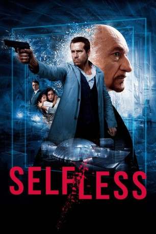

gesehen am 22.12.2015
gesehen am 22.12.2015Alternativ: Self/less gesehen am 22.12.2015
 
 IMDB-Wertung: 6.5 / 10
IMDB-Wertung: 6.5 / 10  Metascore:
Metascore: 
Auch mit allem Reichtum dieser Welt lässt sich Gesundheit nicht kaufen. Doch der milliardenschwere Unternehmer Damian (Ben Kingsley) will sich mit seinem Schicksal nach einer Krebs-Diagnose nicht abfinden. Er vertraut sich einer geheimen Organisation an, die verspricht, seine Lebenszeit zu verlängern, indem sie sein Bewusstsein in einen anderen, jüngeren Körper überträgt. "Shedding" nennt sich das teure Verfahren. Das Experiment glückt. Verjüngt und mit neuer Identität beginnt Damian als Edward (Ryan Reynolds) in New Orleans von vorne. Er genießt die geschenkte Zeit in vollen Zügen, bis er von wirren Träumen geplagt wird und Erinnerungen an ein Leben auftauchen, das nicht sein eigenes ist. Gefährlich wird es, als Damian diesen Visionen auf den Grund geht, denn die Organisation will ihr lukratives Geheimnis um jeden Preis schützen ...
Jahr: 2015
Dauer: 116 Minuten
FSK: 12
Land: USA Studio: Focus FeaturesTonspuren: DTS-HD - ,
Untertitel: Deutsch,
Auflösung: 1080p (1920x816) Größe: 11366 MB
Genre: Action, Thriller, Drama, Sci-Fi, Mystery
Regisseur:  Tarsem Singh
Tarsem Singh
Drehbuch: Àlex Pastor, David Pastor
Soundtrack: Antonio Pinto
Darsteller:
 Ryan Reynolds als Young Damian
Ryan Reynolds als Young Damian Natalie Martinez als Madeline
Natalie Martinez als Madeline Matthew Goode als Albright
Matthew Goode als Albright Ben Kingsley als Damian
Ben Kingsley als Damian Victor Garber als Martin
Victor Garber als Martin Derek Luke als Anton
Derek Luke als Anton Melora Hardin als Judy
Melora Hardin als Judy Michelle Dockery als Claire
Michelle Dockery als Claire Thomas Francis Murphy als Dr. Jensen
Thomas Francis Murphy als Dr. Jensen Sandra Ellis Lafferty als Phyllis Jensen
Sandra Ellis Lafferty als Phyllis Jensen Griff Furst als EMT #1
Griff Furst als EMT #1 Tom Waite als Ambulance Driver
Tom Waite als Ambulance Driver Douglas M. Griffin als Doctor X-Ray
Douglas M. Griffin als Doctor X-Ray Marcus Lyle Brown als Lab Technician
Marcus Lyle Brown als Lab Technician Teri Wyble als Andrea
Teri Wyble als Andrea Mariana Paola Vicente als Leah
Mariana Paola Vicente als Leah Gary Weeks als Chauffeur
Gary Weeks als Chauffeur Robert Harvey als Retirement Home Manager
Robert Harvey als Retirement Home Manager Jimmy Gonzales als Recovery Mercenary
Jimmy Gonzales als Recovery Mercenary Clay Chamberlin als Hallway Lab Tech
Clay Chamberlin als Hallway Lab Tech Jon Arthur als TSA Agent , uncredited
Jon Arthur als TSA Agent , uncredited Sean Paul Braud als Mercenary 2 / Flamethrower , uncredited
Sean Paul Braud als Mercenary 2 / Flamethrower , uncredited Tom Bui als Doctor , uncredited
Tom Bui als Doctor , uncredited Oscar Gale als Trendy Club DJ , uncredited
Oscar Gale als Trendy Club DJ , uncredited Steffie Grote als Jazz Club Waitress , uncredited
Steffie Grote als Jazz Club Waitress , uncredited Christopher Heskey als Medical Orderly , uncredited
Christopher Heskey als Medical Orderly , uncredited Claire McReynolds als Park Kid , uncredited
Claire McReynolds als Park Kid , uncredited John Merolla als Limo Driver , uncredited
John Merolla als Limo Driver , uncredited Philippe Radelet als Lab worker , uncredited
Philippe Radelet als Lab worker , uncredited Lisa Raziano als Airport Traveler , uncredited
Lisa Raziano als Airport Traveler , uncredited Robert Segari als Cab Driver , uncredited
Robert Segari als Cab Driver , uncreditedDatei: X:\2015(N-Z)\Selfless Der Fremde in mir (2015, FSK12, 1920x816).mkv seit 18.12.2015
Festplatte: HD 2015(A-Z)
 Es gibt insgesamt 161 Filme in der Gruppe '2015(N-Z)'
Es gibt insgesamt 161 Filme in der Gruppe '2015(N-Z)'